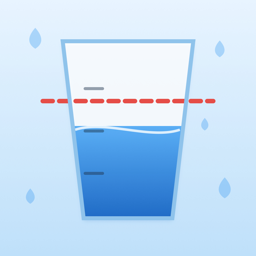

今の時刻の目安が分かる水分補給
いまの時刻なら、ここまで。あと何ml。
飲んだ量をボタンで記録する水分補給のメモです。起きる時刻から寝る時刻まで同じペースで1日の目標まで飲むとしたら、いまの時刻ならどれだけ飲んでいるはずか（目安）を出し、「あと 200ml でおいつく」と見せます。
- 今の時刻の目安。コップの絵に赤い点線で目安を出し、飲んだ量とくらべます
- 押すだけ。ひと口（100ml）・コップ（200ml）・ペット（500ml）・いつもの（自分で決めた量）。飲み物の種類も選べます
- 線と棒。今日の飲んだ量の線と目安の線、この7日の棒（目標に届いた日は緑）
- 目標・起きる時刻・寝る時刻は自分で決めます。日のくぎりは午前4時。医療の判断はしません
- 登録・課金・通知はありません。記録はこの端末の中だけに保存します。画面のいちばん下に小さな広告が出ます（画面いっぱいの広告・動画の広告は出しません）